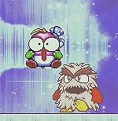
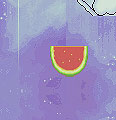
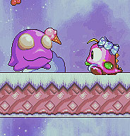
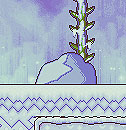

home
blubby è un platform game progettato e sviluppato in Javascript con l'ausilio della libreria stand-alone e open-source che necessita di un browser compatibile con HTML5: Melonjs. Questa libreria è stata realizzata tra il 2011 e il 2014(anno a cui risale all'ultima patch) e consente:
- sviluppo di giochi in 2d
- integrazione delle mappe dei vari livelli, create con Tiled e che presentano quindi un estensione .tmx
- gestione dell'audio e degli effetti sonori
- creazione di nuovi font utilizzabili delle schermate di gioco
- effetti e animazioni sulle voci di menu
- compatibilità con tutti i browser
- gestione delle collisioni tra le entità, le piattaforme e i bonus
Melonjs Official website
Lo scopo del giocatore è quello di esplorare l'intero livello ottenendo così un punteggio elevato, e una chiave che gli
permetterà di superarlo e di iniziare quello successivo. Durante l'esplorazione però si scontrerà con
eventuali nemici che dovranno essere affrontati ed eliminati così permettendogli di incrementare ulteriormente il bonus.
Il giocatore ha a disposizione 3 possibilità + 1, e quest'ultimo è ottenibile durante il suo percorso.
Per la creazione di questo platform è stato necessario lo studio delle classi di oggetti della libreria Melonjs e le sue varie
funzionalità, l'utilizzo di alcuni strumenti per la gestione dei livelli e delle immagini
di gioco, e Photoshop per le varie schermate di Menu, GameOver e di Vittoria.